Searching for MoreUnit for IntelliJ and friends? Here it is!
MoreUnit is an Eclipse plugin (licensed under EPL) that should assist you in writing more unit tests, mainly targeted at the Java language. This is a short
overview of the features it provides, for further information take a look at the documentation section.
MoreUnit offers menus and shortcuts to:
jump to test(ed) files/methods corresponding to the element your are editing (Ctrl-J by default). If none exists, it proposes you to create it.
run test classes/methods from the class under test (Ctrl-R by default).
generate a test method stub for the method under your cursor.
Moreover:
MoreUnit decorates files which have a test case.
In the editor, it marks methods which are under test.
Rename classes/methods and MoreUnit will rename the corresponding test code too.
Move classes and MoreUnit will move the corresponding test cases.
With the Mock plugin: select the dependencies of a class that you want to mock with your favorite library, and MoreUnit will generate the boiler-plate code in your test class.
Documentation
MoreUnit Install
Which version should I install?
If you code in Java or Groovy, you definitely should install MoreUnit For Java, as it brings many code edition and
refactoring features. Otherwise MoreUnit Light will still help you a lot!
Option A: Use Eclipse Marketplace
If you have Eclipse Marketplace installed, open it from Eclipse's Help menu. Then search for MoreUnit, and click on the "Install"
button displayed on the result. It will add MoreUnit update site to your settings and install the plugin altogether.
Option B: Add MoreUnit's update site manually
Go to Help > Install New Software.... Click on Add..., then enter the following URL and validate:
http://moreunit.sourceforge.net/update-site/
You can now select the plugin(s) you want to install from MoreUnit update site and proceed.
Option C: Download the archive
Download the latest archive.
After that open Help > Install New Software. On the upcoming dialog click on the Add-Button. In the
Add repository screen choose your downloaded archive.
With version 3.0.X we have added basic support for all languages. That means you can configure basic settings which
get applied to all languages (described in the next section) and you can specifiy settings for any specific language
which is applied only to that language. Last but not least these settings can be done global (in the preferences) or
on a project base (properties). The UI looks the same for both.
Preferences/properties for all languages
In the preferences/properties navigate to MoreUnit > User Languages and the following UI will show up:
Rule for locating test files
The source path is the place where your project sources are saved. A simple example is that if you save
your sources in a folder called src within your project then the source path should look like:
${srcProject}/src.
The configuration for corresponding test path is similar. E.g. if your save your tests in a folder called
tests, the property should be set to ${srcProject}/tests.
Rule for naming test files
In this section you can specify how you name your tests. E.g. if you suffix your tests with Test, the pattern
should look like ${srcFile}Test.
A more complex example for a common pattern is ${srcFile}*(Test/DbTest). That means your tests can be suffixed
with Test or DbTest, and the star is a wildcard. (Examples for valid test names for
MyFile.java are: MyFileSimpleTest.java, MyFileComplexDbTest.java).
If you use a word separator like _ (e.g. foo_bar) this can be configured here as well to help MoreUnit finding your
tests. If you use camel case (e.g. FirstSecondThirdWord) nothing needs to be configured here.
To get some help with the configuration take a look at the demonstration area where you can test your pattern.
If you click on the link Test, examples of your pattern will show up in the yellow fields.
Per language configurations...
If you work with different languages it could be necessary to configure settings for each language.
To create a new preference page enter a language name (e.g. Ruby) which will be used to label the new preference page,
and a file extension (e.g. rb). If you click the Create Configuration button, a new preference page will show up on
the left, ready to be configured.
To delete a language specific configuration you created, take a look at the preference page for this language. There
is a button labelled Delete Configuration at the beginning of the preference page:
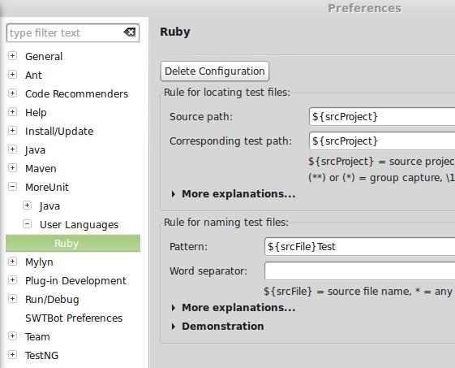
To configure settings for Java or Groovy, you should not use the basic version of MoreUnit. We offer a MoreUnit for Java
plugin with great features which are far beyond the basic support.
Choose Eclipse|Window > Preferences... > General > Appearance > Label Decorations and activate Decorate Classes with
Test Case.
Step 3: Enter your preferences
a) General preferences
Before you can start you have to configure some preferences.
If the source folder for your preferences is not named "test" you have to enter the name of your test source folder (for instance:
src/test/java).
By default MoreUnit expects your test cases to be named with the suffix "Test". For example if a class is named
HelloWorld then the test case should be named HelloWorldTest. If your naming convention differs from this default you have to
enter your naming rule here. Note that you can enter several prefixes and suffixes, via a simple regex-like expression.
In some projects package prefixes/suffixes are used (e.g. tests of classes in package com.foo.* are saved at test.com.foo.* /
com.foo.test.*), which can be configured as well.
b) Project specific preferences (optional)
If you have sourced out tests to another project you will have to define project specific settings. Select the project and open Properties
> MoreUnit > Java. Then choose the project which contains the tests for the underlying project.
If you have other settings that differ depending on the projects in your workspace you can define them under the tab Other.
Step 4: Start coding
Configuration is over, you may now start coding :-) Switch between your production code and your tests with the shortcut Ctrl-J, and run your
tests from both place with Ctrl-R.
All features of MoreUnit for Java will work with Groovy too! Even the test case creation wizard will be a groovy one.
Unfortunately, we never took the time to extract it as full plugin with its own properties, so be aware that your Java
settings will be used!
Label decoration
Class decoration is implemented in a very simple way. Based on the settings (test case prefixes and suffixes) MoreUnit tries to find a matching
class in the underlying project. If for instance "Test" is an element of your test case suffix list (this is the default setting on first
installation) Foo will be marked with a small green icon in the package explorer if a class named FooTest exists in the underlying project.
Decoration is disabled by default. You have to enable label decoration via Eclipse|Window > Preferences... > General > Appearance
> Label Decorations > Decorate Classes with Test Case.
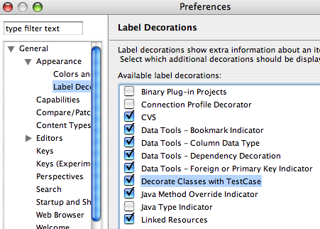
Marker in the editor
You can configure MoreUnit to mark methods having test methods with a green marker in the vertical
ruler of the editor.
If you want MoreUnit markers to appear in the overview ruler or if you want to disable markers in the editor this can be done via the annotation
preferences of Eclipse (to highlight ignored tests there is a yellow marker which can be configured separately):
Switching between test and class under test
You can jump from java classes which are open in the editor to the corresponding test cases via the contextual menu of the editor or via the
shortcut Ctrl-J. MoreUnit identifies the name of the class under the cursor. To find the corresponding test case the prefixes and suffixes
from the preferences are used. If exactly one test case is found the file gets opened. If more than one test case is found a dialog is shown and
prompts you to choose which test case you want to work on (alternatively a new test case can be created from the dialog):
If no test case is found the test case wizard is shown, initialized with the settings from the preference page:
MoreUnit also tries to identify the test method(s) corresponding to the method under the cursor and directly jumps to it if only one is found.
Example: For a method named "addTree" tests named "testAddTree" or "testAddTreeSUFFIX" will be detected as test method.
Also, if you activated the extended method search, a test method that calls your method will be found, whatever its name. Finally, please
note that jumping also works the other way, to go back to your production code.
The shortcuts for the jump/generate action are configurable. If you want to change the default keys go to Window > Preferences... >
General > Keys and change the settings of the commands named "Create Test Method" and "Jump to Test".
Test case/test method creation
To generate a test-method stub choose "Generate Test Method" from the pop-up menu within an editor. MoreUnit identifies the method under the cursor and
generates a test method stub. At first MoreUnit tries to find a test case for the underlying resource (if you want to know how this is done, take a
look above at "Jump to test"). If no test case is found the test case wizard is shown. If the method under the cursor is named "amethodname" the
generated test method will be name "testAmethodname", assuming you defined "test" as a prefix in MoreUnit preferences. If MoreUnit detects a test
method with this name no method stub is generated.
MoreUnit doesn't jump to the test method automatically so you have to jump to the test case if you want to edit it.
The shortcuts for the jump/generate action are configurable. If you want to change the default keys go to Eclipse|Window > Preferences... >
General > Keys and change the settings of the commands named "Create Test Method" and "Jump to Test".
If you use the "Generate Test Method" action on a test method MoreUnit creates a second test method.
Running a test from class under test
If you have a class under test you can run the corresponding test case class(es) directly from this class by hitting Ctrl-R.
Note: if you have several TestNG test classes for a given class and you are using a version of the TestNG plugin that is older than
version 5.14.2.10, MoreUnit will ask you which test class to launch. In that case please consider upgrading TestNG to version 5.14.2.10+.
Missing test method view
MoreUnit offers a view to show the methods of the classes you are working on which do not have a test method yet. To use this view just open it:
Window > Show View > Other... > Missing Test Methods.
This view offers 3 features:
Filter private methodsFilter getter/setterCreate test methods for selected methods
Refactoring support
MoreUnit offers some refactoring support:
If you rename a class and a corresponding test case exists, MoreUnit will rename it too.
There is a similar behavior for methods: if you rename a method having one or more corresponding test methods, then all those methods are
renamed accordingly (see screenshots below).
Finally, MoreUnit also support "move" refactorings: if you move a class to a different package MoreUnit will move the corresponding tests
as well.
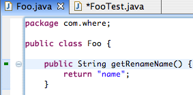
Preferences
To use MoreUnit you can/should configure the preference page to fit your personal needs. All these settings can be configured for the whole
workspace or for each project.
Directory for test cases: The folder containing your tests.
In the following screenshot tests are stored in the junit folder:
If you store your tests in a different project you will have to use the specific settings of your
main project to reference the test project:
Use test-prefix for test-methods: Whether test methods are prefixed with test. Automatically checked when using JUnit3:
Test method content: The default content of test methods generated by MoreUnit:
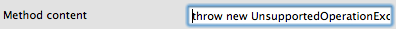
Test file naming pattern: Specify this pattern to reflect your naming convention (by default, Test is defined as a suffix):
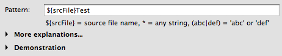
Package suffixes/prefixes: If you are using prefixes or suffixes for your test packages. For example: If tests for classes in the package
com.foo.* are stored under com.foo.test.* you have to enter "test" into the package suffix property.
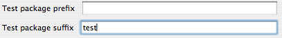
You can configure a super class which is used in the New Test Case wizard. If you use JUnit3, org.junit.TestCase will be automatically
used as a super class, whether you defined it here or not.
Example: Class: Foo.java Tests: FooTest.java, FooSituation1Test.java, FooSituation2Test.java Assuming you have specified "${srcFile}*Test" as a
test class naming pattern, when using the action
Jump to Test from Foo.java, MoreUnit shows a lightweight pop-up menu to let you choose the test class you want to jump to.
Enable extended search for test methods: If you name your test methods with more meaningful names than just the name of a method that is being
tested, you should activate this option:
In the following example, MoreUnit will find that nothingIsComputedIfNoEntryIsGiven() is a test method for Service.compute():
Project specific settings
Project specific settings allow to configure mappings between source folder(s) and test folder(s) (e.g. if you have several test folders). In
the following you can see some examples of projects and the corresponding mappings for MoreUnit.
In the first example tests are saved in a different test project. The specific settings to configure are those of the project that is being
tested, i.e. containing the production code org.moreunit.plugin below:
In the second example the project has one test folder test which is mapped to the source folder src:
In the third example the project has two separate test folders test1 and test2 which are both mapped to the same source folder
src:
Extension points
addTestmethodParticipator
You can add an extension point to be called after test method creation in MoreUnit. The extension point gets the test method context, that can
be used to replace or modify the created test method.
The following is a small snippet to declare the extension point in a plugin.xml:
And here is a short snippet to replace the created method:
public class MyAddTestMethodParticipator implements IAddTestMethodParticipator
@Override
public void addTestMethod(IAddTestMethodContext context) {
// Get test method from context
IMethod testMethod = context.getTestMethod();
try {
// Delete old test method
testMethod.delete(true, null);
// Create a new one
IMethod createMethod = context.getTestClass().findPrimaryType()
.createMethod("void hello() {}", null, true, null);
// Update context
context.setTestMethod(createMethod);
} catch (JavaModelException e) {
e.printStackTrace();
}
}
}
More information you may find in the extension point schema and the source code of the interfaces used in the extension point.
Please check out the org.moreunit.extension-plugin from GIT to get an example plugin.
newTestCaseWizardParticipator
Documentation still to be written... This extension point presents some problems and will be modified in the near future.
testLaunchSupportAddition
Documentation still to be written...
Support for mocking frameworks
MoreUnit proposes you to automatically mock the dependencies of your classes in their associated test cases: just select the dependencies
that you want to be mocked in the new page that appears in the "New Test Case" wizard:
This feature is also available for already existing test cases: just right click in the Java editor when viewing either the class under test or
the test case and choose MoreUnit > Mock Dependencies in Test Case...
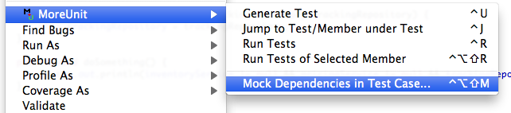
As an example, the previous wizard opened for the following code:
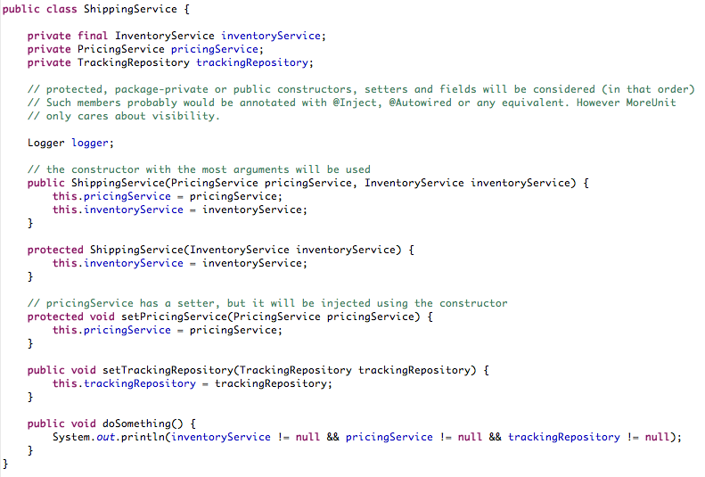
... on validation it will produce the following code if you use Mockito:
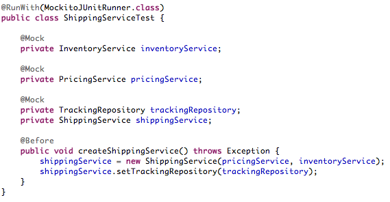
... or the following one if you use EasyMock:
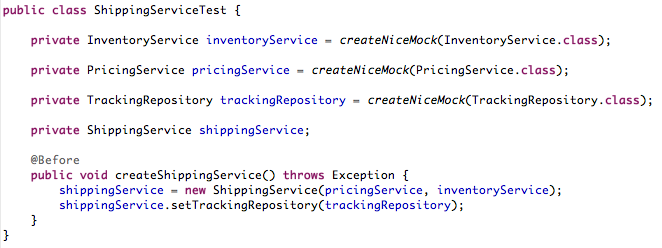
JMock and JMockit are also supported, as well as PowerMock in combination with Mockito and EasyMock. You can choose your preferred mocking
framework and result style in the preferences or your workspace or project:
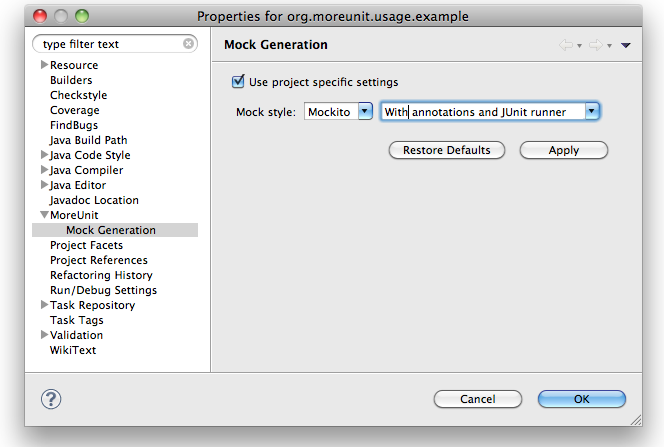
We also aim to provide the following features:
default values for types that are not mockable: primitive types, their corresponding wrappers, etc...
support for other mocking frameworks or output styles if you ask for it (see our contact page)
Finally, you can create your own templates to support your custom configurations.
All you have to do is to place them in your workspace, under .metadata/.plugins/org.moreunit.mock/templates,
and then to load them via the "Reload templates" button in MoreUnit preferences (Preferences > MoreUnit > Java > Mock Generation).
Your templates will also be taken into account at restart.
Fore more information and to validate your templates, please refer to the XSD.
You might also learn from the existing templates.
Note: this feature — the templates — has been primarily developed to ease the pain of working with legacy code bases. Within a
fresh project, we advise you to adopt a test-first approach ;-)
FAQ
My project has more than one test source folder (e.g. unit & functional)?
You have to use project specific settings. There you can configure more than one test source folder (this can not be done with the workspace
settings of MoreUnit).
I'm getting error messages after installing the plugin.
Current versions of MoreUnit do not support Eclipse versions older than 3.4. If you can not switch to a recent version of Eclipse try to
install older versions of MoreUnit.
Release Notes
2016-02-28: Version 3.1.0
Bug sf#140: fix NPE
Bug gh#3, sf#134, sf#135: mitigates problems of conflicts with Eclipse's Call Hierarchy feature
Bug sf#141: do not move testcase after move of CUT if not necessary
Bug sf#139: missing test method view uses search mode now to get tested methods
2015-01-26: Version 3.0.5
Clarification: Renamed "Generate Test" action to "Generate Test Method"
Support request #3: JMockit test cases now use JUnit runner by default
Feature request #58: Makes Crtl+R run test cases that do not follow configuration
Feature request #80: Added some magic for unconfigured Maven-like project
Bug #131: Protected file paths against Regex interpretation
Bug #130: Removed NPE while updating annotations
Bug #129: Added validation for test source folder on the preference page
Bug #114: Added an XSD and more documentation to improve writing of custom templates for mocking frameworks
Bug #70: Searches for test(ed) methods by name, call or both
Fixed some other NPEs in corner cases
2014-04-17: Version 3.0.4
Feature request #75: allows for mapping multiple source folders to same test folder
Improves memory usage of file/class search
Avoids blocking of threads when annotating tested classes
Bug #125: handles wildcards when dependencies to mock have generic types
Bug #124: adds support for regex symbols in file names and test file name templates
2013-10-25: Version 3.0.3
Feature request #67: Marks methods having @Ignored tests
Feature request #70: Generates Javadoc for test methods
Feature request #71: Mocks: adds support for private and @Injectable fields
Feature request #73: Multiline content for test method content
Mocks: improves user experience regarding template creation and loading
Improves online documentation
Fix: (bug 123) typo
Fix: (bug 117) Handles project names with braces
Fix: (bug 119) ClassCastException while annotating
Fix: (bug 3613196) Removes unnecessary info logs
Fix: NPE when project is misconfigured or contains only one source folder
Fix: NPE when validating new test case creation from first wizard page
Fix: Preferences: does not force focus anymore on source and test folder fields, when user input is wrong
Fix: Mocks: avoids NPEs when parts are missing from XML template definitions
2013-04-16: Version 3.0.2
Fix: (bugs 3609347 & 3608154) restores generation of test method stubs
Fix: (bugs 3594912, 3594914 & 3594689) "New Test Case" wizard's options now fully works with TestNG
Fix: (bug 3594899) erroneous MockitoAnnotations.init() has been replaced with MockitoAnnotations.initMocks()
Fix: (bug 3594955) "Mock Dependencies" wizard page now uses values from "New Test Case" page
Fix: (bugs 3524436 & 3592790) newly created test method is revealed in editor
2013-01-06: Version 3.0.1
Adds a marker on (non-java) files that are tested
Adds support for JMockit and PowerMock in test code generation
Fix: restores direct jump to test(ed) method (Java)
Fix: (bug 3594659) Selection of TestNG type in NewTestCaseWizard disabled JUnit 4 test type
Fix: (bug 3592788) Wrong creation of test method stubs when using test case creation wizard
Removes dependencies in order to reduce MoreUnit's download size
2012-12-04: Version 3.0.0.02
Migration to Java 6 (reduces MoreUnit's download size)
Fix: (bug 3592074) error when using "Move" refactoring
Fix: mocking code generation for test classes with parent or comments
2012-11-24: Version 3.0.0.01
Adds basic support for all programming languages: jump to source/test file, opening of a pre-filled wizard when file does not exist
Adds a more powerful way to define test file naming patterns, and a demo area to test those patterns
Methods are now marked as tested when they are called in the corresponding test class(es), not only when the test method names correspond
MoreUnit is now present in Eclipse's "About" dialog ;-)
Our old Ant-based build script has been replaced with a more standard approach using Tycho
Fix: (bug 3588502) package-private and protected members are now available for mocking
Fix: (bugs 3586482 & 3586395) various problems due to package-info.java files that were considered as regular compilation units
Various minor fixes
2012-06-27: Version 2.4.6
Some bugfixes
Groovy support (uses Java settings for now)
TestNG support for mock creation
Support for Mockito's @InjectMocks
Support for JMock (thanks Joe!)
Support for loading custom templates to support other libs (thanks again to Joe)
2012-04-18: Version 2.4.4
Improved performance
Improvements in the Missing test method view and Missing tests view
2012-02-22: Version 2.4.3
Fix: do not consider potential test cases with packages that do not match the package of the class under test anymore, except as a proposal when jumping (bugs 3482684 & 3386098)
Adds a "New Class" entry in the "Jump To..." pop-up menu
Fix: the "New Class" wizard is back when "jumping" from a test class that does not have an associated tested class yet
The support for mocking frameworks now also works for Eclipse platforms that use Java 5 but do not provide JAXB
Fix: occasional exception when moving classes (bug 3285663)
The preferences UI has been improved so that it better fits in the dialog, and tooltips appears
Improves source folder guesses for Maven-like project (more work to come)
Adds "throws Exception" to generated test methods
Fix: the "no constructor" warning does not appear anymore when mocking dependencies of a class that has a default constructor
Much work has been done (and is still done) to improve testing of MoreUnit :-)
2011-05-18: Version 2.4.2
Adds a wizard to select which dependencies are to be mocked in a test case
2011-03-23: Version 2.4.1
Fix: stale import statements in test case when changing package of class under test
Package is now shown when user is prompted for selecting a class (Jump and Run actions)
Fix: exception when moving class to non-source folder
Fix: exception when jumping action had delay
Minor fixes
2010-10-26: Version 2.2.1
Extension point enhancements
Extended method search has been improved (better performance and accuracy)
Different actions for running a single test method or the whole test case
Better support for TestNG (now runs several test cases at once)
2010-08-12: Version 2.1.3
Fix: Java 5 compatibility
2010-08-01: Version 2.1.2
Fix: Added extension point schema to release
2010-07-31: Version 2.1.1
History for switching if there are multiple tests
Extended method search
Further improvements to the extension point
Bugfixing
2010-06-14: Version 2.0.1
Please uninstall older versions of MoreUnit before switching to the new release.
New Update site (was necessary because of a new feature id moreUnit -> org.moreUnit)
Update site is p2 enabled now
Running test from class under test (thanks to Nicolas Demengel for his patch).
Started to add extension points for MoreUnit (thanks to Thomas Heilbronner for his patch)
2009-03-25: Version 1.3.3
Bugfix (Exception when opening class-files)
2009-03-23: Version 1.3.2
Important Bugfix (Exception when opening non-java-files)
2009-03-22: Version 1.3.1
Prefix for test method names is now configurable.
Marker in the editor can be configured via preferences
Minor Bugfixes
2008-12-23: Version 1.2.0
TestNG support for test case creation wizard
Package renaming: tests get moved to new package name
Bugfixing
2008-09-13: Version 1.1.4
Redesign project specific settings (mapping between test and source folder)
Project specific settings are stored in the .settings folder within the project folder
Improved performance
2008-02-16: Version 1.0.2
Project specific settings are now possible.
Move refactoring support
TestNG support
2007-02-25: Version 0.8.1
MoreUnit now offers a view to show the missing test methods of the open java file.
New configuration on the preference page for flexible test case naming (if you enable this feature and for example use "Test" as suffix
for test cases MoreUnit will detect FooFlexibleTest.java as test case too).
2006-12-01: Version 0.7.0
Several Bugfixes. Take a look at Bugzilla for details: [1580067, 1579660, 1579476, 1579278]
Using the "Generate test" on a test method creates a second test method.
2006-10-22: Version 0.6.1
Bugfixing (solved problems with closed projects and Rename refactorings)
2006-10-15: Version 0.6.0
MoreUnit supports project specific settings to configure a project containing the tests for each project
Extended preferences (packages suffixes are now supported for the tests)
Bugfixing
2006-06-15: Version 0.5.2
MoreUnit is published under the Eclipse Public License from now on.
The two projects MoreUnit and SwitchUnit are merged.
JUnit4 support is implemented (configurable at the MoreUnit-preference page).
To create a new test case the Eclipse test case wizard is used (initialized with MoreUnit-specific preferences).
Minor Bugfixes and smaller enhancements.
2006-05-01: Version 0.4.3
MoreUnit offers refactoring support now. Renaming a class or a method leads to a dialog to rename corresponding test cases or methods
either.
Suffix for test case (usually Test) can be configured via the preferences.
Older versions of MoreUnit only offered the possibility to jump via a shortcut to the corresponding test case or test method. Since
version 0.4.3 it is possible to switch between test case/test method and class/method under test with the same shortcut. (Thanks to
Jiming Liu, who asked for this feature).
Java template preferences (comments) are used for new test cases.
Switched MoreUnit java 1.5
2006-03-23: Version 0.3.2
New marker icon (if you had already installed a version of MoreUnit you have to start Eclipse once without MoreUnit and afterwards you
can install the newest version, don't know what the problem is, but if you don't go this way, no new marker icon will appear) for tested
methods and MoreUnit got extended to recognize test-methods.
Marker icons are now persistent and will be restored automatically after workbench restart.
Moved actions to add / delete marker from the workspace to the project pop-up menu in the package explorer.
I tried to implement a refactoring support for corresponding tests (rename of class should rename corresponding tests) but had problem
with the current API. So if I want to see this feature in this plugin, please vote for this bug at eclipse.org:
https://bugs.eclipse.org/bugs/show_bug.cgi?id=132746
2006-01-23: Version 0.3.1
"Jump to test" jumps to the corresponding test method, if possible.
Marker position always beside method signature (they where positioned beside a comment if there was one above the signature in earlier
versions).
In earlier releases test cases had been created in a wrong project sometimes (under special circumstances), this problem should be
fixed now.
2006-01-08: Version 0.3.0
The plugin works now with Eclipse 3.1.1 (and draws the markers for tested methods)
Folder for the tests can now be configured via the preferences panel
Minor bugfixes
About
The MoreUnit team
The project got published on January 2006 by Vera Henneberger (formerly Wahler). From May 2006 until February 2013 Channing Walton was a member of the project
as well. He had the same idea for the plugin and published SwitchUnit. We merged both plugins and we worked together from then. In 2010
Nicolas Demengel joined the project.
If you want to contact us please mail to moreunit.feedback [AT] gmail [DOT] com
A lot of people have helped with their feedback to improve this plugin. Thanks a lot!
The following persons got involved and contributed to MoreUnit:
David Karr
Channing Walton
Joseph Thomas-Kerr
Nicolas Demengel (has joined the team since then)
Andreas Groll
Thomas Heilbronner
Alexander Kurtakov
Zach Shaw
Stanislav Bernatsky
Markus Gebhard
Björn Voß
Download
Update site
Use the following update site:
http://moreunit.sourceforge.net/update-site/
The old update-site http://moreunit.sourceforge.net/org.moreunit.updatesite/ has been freezed with version 1.3.3. If you are
still using this version and want to upgrade, please uninstall older versions of MoreUnit first: the feature id has changed and you will get
error messages if older versions are still installed when switching to version 2.x.x.